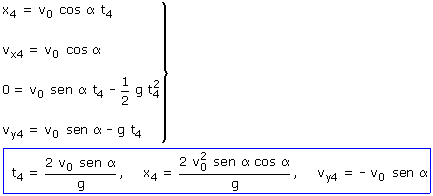
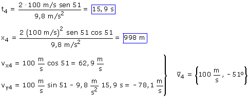

e)
Ecuaciones del movimiento:
|
|
Parámetros: v0 = 100 m/s, α = 51º g = 9,8 m/s2 |

Aplicación:
Datos: y4 = 0, Incógnitas: t4, x4, vx4, vy4
|
|
 |


El proyectil tarda 15.9 s en volver al suelo y lo hace 998
m a la derecha del observador.
El alcance será: 998 m
Llega al suelo con la misma velocidad que salió y dirección cambiada de signo.
Este resultado no se puede generalizar, la velocidad de llegada al suelo será igual a la de salida solo cuando el proyectil salga del suelo. Lo que si es cierto es que hay simetría en el movimiento vertical: sí se pasa dos veces por la misma altura las velocidades correspondientes serán iguales en módulo y tendrán la dirección cambiada de signo